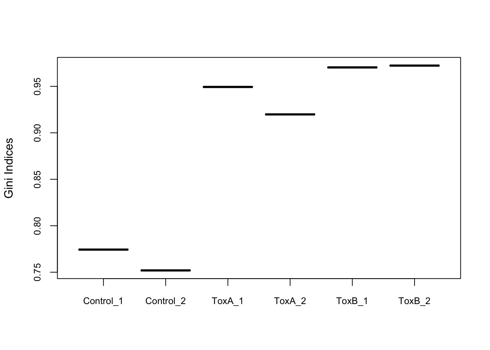

Preprocessing the data
Before conducting the differential abundance analysis in a CRISPR screen, we eliminate guides that could compromise the statistical power in the downstream analysis. Specifically, we exclude non-targeting sgRNAs employed to assess the sgRNA library’s quality, as they are unnecessary for the further statistical analysis. Subsequently, we filter out guides with very low counts across many samples.
The next step is normalization. The normalization following filtering is vital because each library is sequenced at varying depths, and libraries with higher counts will naturally yield higher counts. Normalization involves transforming raw counts onto a different scale where differences in library sizes are considered and adjusted for.
Remove control guides
First we remove 1000 control (non-targeting) sgRNAs from the count matrix as they are designed not to target in the genome.
[1] 121411 6Check guide distribution
The control samples contain the majority of sgRNAs, and the numbers decrease in the treated samples.
data <- NULL
sample_names <- c(colnames(d), "GeCKO")
l <- c(as.integer(colSums(!d$counts == 0)), nrow(d$counts))
t <- c(as.character(d$samples$group), "GeCKO")
data <- data.frame(row.name = sample_names, l = l, t = t)
data <- data[order(data$l, data$t), ]
col <- c("#FF6666", "#6DAEB0", "#FAA578", "#FFB6C1")
my_bar <- barplot(data$l, xlim = c(0, 140000), names.arg = data$row.name, las = 1,
space = 1, cex.names = 0.85, xlab = "The number of detected guides", main = "The distribution of guides",
col = col[as.factor(data$t)], border = NA, legend = TRUE, horiz = TRUE)
text(my_bar, x = data$l + 7000 # adjust this number
, paste0("n:", data$l),
las = 2)
legend("bottomright", legend = levels(factor(data$t)), fill = col)
Evaluate the uniformity
The Gini index, originally an economic measure of inequality, is used in CRISPR analysis to evaluate the uniformity of sgRNA presence. A Gini index of 0 indicates evenness, while an index of 1 suggests unevenness. Here, it’s notable that the control samples exhibit greater uniformity compared to the treated samples.
Control_1 Control_2 ToxA_1 ToxA_2 ToxB_1 ToxB_2
0.7743390 0.7519516 0.9493576 0.9198235 0.9703805 0.9723415 
Remove lowly expressed guides
Guides lacking a substantial number of reads in any sample should be excluded from downstream analyses. There are multiple rationales for this choice. From a biological perspective, guides that fail to register at a biologically relevant level in any condition are deemed uninteresting and are consequently disregarded. From a statistical standpoint, the elimination of guides with low counts enhances the reliability of estimating the mean-variance relationship in the data. It also reduces the number of statistical tests required for subsequent analyses focused on differential abundance.
To implement this, here we used two filtering methods: one permissive and the other strict.
Strict filtering
For the strict approach, guides with low expression were filtered out, retaining as many guides as possible with meaningful counts. This was achieved using the filterByExpr() function in the edgeR package, a tool commonly applied in RNA-seq experiments for automated gene filtering. Initially, the count matrix contained 122,411 guides. After applying filterByExpr(), 113,395 guides (93%) were removed due to their low presence, leaving 9,016 guides for further analysis. It’s worth noting that filterByExpr() often retains only one guide per gene, which is sub optimal for CRISPR screens, where the collective behavior of multiple guides targeting the same gene is essential for validation.
keep.exprs
FALSE TRUE
112601 8810 [1] 8810 6[1] 7277
1 2 3 4 5 6
5912 1215 135 13 1 1 barplot(nsgrna, col = "#FF9999", ylim = c(0, 7000), border = NA, main = "The distribution of number of sgRNAs per gene \n (After strict filtering)")
Permissive filtering
To address the limitations of strict filtering, we used a more permissive filtering approach. This method involved defining guide-wise threshold (\(th1\)) and sample-wise threshold (\(th2\)). We utilize CPM (Counts Per Million) values instead of raw counts to prevent bias toward samples with larger library sizes. For this dataset, the median library size is about \(341,201\) and \(th1\) is computed as \(1e6/341201 ≈ 0.29\), so the permissive filtering keeps the guides that have a CPM of 0.29 or more in at least \(th2=2\) samples.
This approach aims to strike a balance, allowing for the inclusion of as many guides as possible targeting the same gene, facilitating a more robust assessment of the collective impact of guides in CRISPR screens. Consequently, with the permissive approach, we retained \(58171 (48\%)\) of the guides.
th1 <- as.vector(cpm(1, median(d$samples$lib.size)))
th1 # median count per million reads (1e6/mean(d$samples$lib.size))[1] 2.930824th2 <- 2 # average number of sample per condition
keep.exprs <- rowSums(cpm(d) > th1) >= th2
table(keep.exprs)keep.exprs
FALSE TRUE
65484 55927 [1] 55927 6[1] 19659
1 2 3 4 5 6
2867 5150 5870 3983 1516 273 barplot(nsgrna, col = "#FF9999", ylim = c(0, 7000), border = NA, main = "The distribution of number of sgRNAs per gene \n (After permissive filtering)")
Look at density plots
The density distributions of raw counts reveal the presence of numerous guides with low abundance, characterized by small log-cpm values. The application of permissive filtering appears to diminish the count of such lowly abundant guides. This reduction is evident in the decreased peakedness (kurtosis) of the distribution, accompanied by a shift towards greater symmetry as indicated by the balanced skewness.
x <- d
nsamples <- ncol(x)
col.density <- brewer.pal(nsamples, "Paired")
par(mfrow = c(1, 3))
samplenames <- colnames(x)
cpm <- cpm(x)
lcpm <- cpm(x, log = TRUE)
plot(density(lcpm[, 1], bw = 0.4), col = col.density[1], lwd = 2, ylim = c(0, 1),
las = 2, main = "", xlab = "")
title(main = "A. Raw data", xlab = "Log-cpm")
for (i in 2:nsamples) {
den <- density(lcpm[, i], bw = 0.4)
lines(den$x, den$y, col = col.density[i], lwd = 2)
}
legend("topright", samplenames, text.col = col.density, bty = "n")
x <- d.filtered.p
cpm <- cpm(x)
lcpm <- cpm(x, log = TRUE)
plot(density(lcpm[, 1], bw = 0.4), col = col.density[1], lwd = 2, ylim = c(0, 1),
las = 2, main = "", xlab = "")
title(main = "B. Permissively filtered data", xlab = "Log-cpm")
for (i in 2:nsamples) {
den <- density(lcpm[, i], bw = 0.4)
lines(den$x, den$y, col = col.density[i], lwd = 2)
}
legend("topright", samplenames, text.col = col.density, bty = "n")
x <- d.filtered.s
cpm <- cpm(x)
lcpm <- cpm(x, log = TRUE)
plot(density(lcpm[, 1], bw = 0.4), col = col.density[1], lwd = 2, ylim = c(0, 1),
las = 2, main = "", xlab = "")
title(main = "C. Strictly filtered data", xlab = "Log-cpm")
for (i in 2:nsamples) {
den <- density(lcpm[, i])
lines(den$x, den$y, col = col.density[i], lwd = 2)
}
legend("topright", samplenames, text.col = col.density, bty = "n")
Normalise the counts
During sample preparation or sequencing, factors unrelated to biological processes can influence the expression of individual samples. The expectation is that all samples should exhibit a comparable range and distribution of expression values. To ensure uniformity across the entire experiment, normalization becomes necessary. Commonly, raw counts are transformed into a scale that accounts for differences in library sizes.
In our case, we first employed the cpm function in edgeR to transform raw counts into counts per million (CPM) and log2-counts per million (log-CPM) values. This transformation facilitates a standardized representation of expression values, enabling more meaningful comparisons across samples.
CPM normalised counts
par(mfrow = c(1, 3))
yy <- d[, order(d$samples$group, colSums(d$counts))]
yy.logcpm <- cpm(yy, log = T)
boxplot(yy.logcpm, las = 2, pch = 19, col = col[as.factor(yy$samples$group)], outcex = 0.3,
outcol = col[as.factor(yy$samples$group)], labels = colnames(yy.logcpm), main = "A. CPM normalised raw data",
ylab = "SgRNA representation (log2 cpm normalised reads)")
legend("topleft", legend = levels(factor(yy$samples$group)), col = col, pch = 19,
cex = 0.5)
yy <- d.filtered.p[, order(d.filtered.p$samples$group, colSums(d.filtered.p$counts))]
yy.logcpm <- cpm(yy, log = T)
boxplot(yy.logcpm, las = 2, pch = 19, col = col[as.factor(yy$samples$group)], outcex = 0.3,
outcol = col[as.factor(yy$samples$group)], labels = colnames(yy.logcpm), main = "B. CPM normalised permissively filtered data",
ylab = "SgRNA representation (log2 cpm normalised reads)")
legend("topleft", legend = levels(factor(yy$samples$group)), col = col, pch = 19,
cex = 0.5)
yy <- d.filtered.s[, order(d.filtered.s$samples$group, colSums(d.filtered.s$counts))]
yy.logcpm <- cpm(yy, log = T)
boxplot(yy.logcpm, las = 2, pch = 19, col = col[as.factor(yy$samples$group)], outcex = 0.3,
outcol = col[as.factor(yy$samples$group)], labels = colnames(yy.logcpm), main = "C. CPM normalised strictly filtered data",
ylab = "SgRNA representation (log2 cpm normalised reads)")
legend("topleft", legend = levels(factor(yy$samples$group)), col = col, pch = 19,
cex = 0.5)
Following that, we implemented the TMM normalization using the normLibSizes function within the edgeR package. When dealing with DGEList objects, the normalization factors are automatically stored in the DGEList object.
In the permissively filtered data, the influence of TMM normalization is modest, as suggested by the scaling factors, all of which are reasonably close to 1. However, notable is the fact that the normalization factors for ToxB samples are below one. This implies that a small number of highly abundant guide counts disproportionately influence the sequencing, causing counts for other genes to be lower than expected based on the library size. Consequently, the library size will be reduced, akin to scaling up the counts within that library. Such a scenario is typical in CRISPR screens.
To address this, introducing a prior value to the counts—sufficiently small to avoid altering the overall data distribution—serves to balance the library sizes, mitigating the impact of a few highly expressed guides.
TMM normalised counts
par(mfrow = c(2, 2))
yy <- d.filtered.p[, order(d.filtered.p$samples$group, colSums(d.filtered.p$counts))]
yy$samples$norm.factors <- normLibSizes(yy$counts, method = "TMM")
yy$samples[, 1:3] # TMM normalization factors of permissively filtered data group lib.size norm.factors
Control_2 Control 258228 1.3182523
Control_1 Control 261610 1.3544882
ToxA_2 ToxA 323563 1.1733655
ToxA_1 ToxA 334876 1.2013967
ToxB_2 ToxB 344894 0.5817462
ToxB_1 ToxB 346781 0.6829248yy.logcpm <- cpm(yy, log = T)
boxplot(yy.logcpm, las = 2, pch = 19, col = col[as.factor(yy$samples$group)], outcex = 0.3,
outcol = col[as.factor(yy$samples$group)], labels = colnames(yy.logcpm), main = "A. TMM normalised permissively filtered data",
ylab = "SgRNA representation (log2 cpm normalised reads)")
legend("topleft", legend = levels(factor(yy$samples$group)), col = col, pch = 19,
cex = 0.5)
yy <- d.filtered.p[, order(d.filtered.p$samples$group, colSums(d.filtered.p$counts))]
yy$samples$norm.factors <- normLibSizes(yy$counts + 100, method = "TMM")
yy$samples[, 1:3] # TMM normalization factors of permissively filtered data after adding a prior count of 100 group lib.size norm.factors
Control_2 Control 258228 1.0193334
Control_1 Control 261610 1.0187857
ToxA_2 ToxA 323563 0.9939975
ToxA_1 ToxA 334876 0.9917365
ToxB_2 ToxB 344894 0.9884410
ToxB_1 ToxB 346781 0.9882539yy.logcpm <- cpm(yy, log = T)
boxplot(yy.logcpm, las = 2, pch = 19, col = col[as.factor(yy$samples$group)], outcex = 0.3,
outcol = col[as.factor(yy$samples$group)], labels = colnames(yy.logcpm), main = "B. TMM offset-normalised permissively filtered data",
ylab = "SgRNA representation (log2 cpm normalised reads)")
legend("topleft", legend = levels(factor(yy$samples$group)), col = col, pch = 19,
cex = 0.5)
yy.norm <- yy # we continue downstream analysis with this object
yy <- d.filtered.s[, order(d.filtered.s$samples$group, colSums(d.filtered.s$counts))]
yy$samples$norm.factors <- normLibSizes(yy$counts, method = "TMM")
yy$samples[, 1:3] # TMM normalization factors of strictly filtered data group lib.size norm.factors
Control_1 Control 56390 2.0995847
Control_2 Control 57402 1.8983192
ToxA_2 ToxA 242030 1.9418813
ToxA_1 ToxA 283958 1.8621100
ToxB_1 ToxB 298310 0.2919254
ToxB_2 ToxB 300952 0.2376826yy.logcpm <- cpm(yy, log = T)
boxplot(yy.logcpm, las = 2, pch = 19, col = col[as.factor(yy$samples$group)], outcex = 0.3,
outcol = col[as.factor(yy$samples$group)], labels = colnames(yy.logcpm), main = "C. TMM normalised strictly filtered data",
ylab = "SgRNA representation (log2 cpm normalised reads)")
legend("topleft", legend = levels(factor(yy$samples$group)), col = col, pch = 19,
cex = 0.5)
yy <- d.filtered.s[, order(d.filtered.s$samples$group, colSums(d.filtered.s$counts))]
yy$samples$norm.factors <- normLibSizes(yy$counts + 100, method = "TMM")
yy$samples[, 1:3] # TMM normalization factors of strictly filtered data after adding a prior count of 100 group lib.size norm.factors
Control_1 Control 56390 1.1054064
Control_2 Control 57402 1.1063956
ToxA_2 ToxA 242030 1.0496637
ToxA_1 ToxA 283958 1.0223192
ToxB_1 ToxB 298310 0.8749980
ToxB_2 ToxB 300952 0.8708108yy.logcpm <- cpm(yy, log = T)
boxplot(yy.logcpm, las = 2, pch = 19, col = col[as.factor(yy$samples$group)], outcex = 0.3,
outcol = col[as.factor(yy$samples$group)], labels = colnames(yy.logcpm), main = "D. TMM offset-normalised strictly filtered data",
ylab = "SgRNA representation (log2 cpm normalised reads)")
legend("topleft", legend = levels(factor(yy$samples$group)), col = col, pch = 19,
cex = 0.5)
RStudioGD
2 Unsupervised clustering of samples
A Multi-dimensional Scaling (MDS) plot visually depicts the similarities and differences among samples in an unsupervised manner, providing a preliminary understanding of the potential for identifying differential abundance before formal testing. The leading fold-change is conventionally defined as the root-mean-square of the largest 500 log2-fold changes between sample pairs.
For this purpose, we utilize the plotMDS function from the limma package. It’s worth noting that loading the limma package is redundant, as edgeR already includes and invokes its functions.
lcpm <- cpm(yy.norm, log = TRUE)
cols <- col
plotMDS(lcpm, col = cols[factor(yy.norm$samples$group)], main = "MDS plot of permissevly filtered and TMM offset-normalised data",
pch = 16, cex = 2)
legend("bottomright", legend = levels(factor(yy.norm$samples$group)), col = cols,
pch = 16, cex = 0.8)
We can see that the biological replicates of control and treated samples cluster well within the groups over dimension 1 and 2. The first dimension accounts for largest variability in the data. Then the larger the dimension, the lower the variation is. While samples exhibit grouping tendencies, there are significant abundance distinctions between control and treated samples. Consequently, we anticipate that when performing pairwise comparisons among control and treated samples, there will be a higher count of differentially abundant guides in comparisons.
Visualise guide abundance profiles of samples
A more detailed exploration of the normalization procedure applied to individual samples can be accomplished using mean-difference (MD) plots. In an MD plot, the library size-adjusted log-fold change between two libraries (the difference) is graphed against the average log-expression across those libraries (the mean). It is a good practice to look at MD plots for all samples for a quality check. We use plotMD from edgeR package to do that.
par(mfrow = c(3, 2))
for (i in 1:6) {
plotMD(yy, column = i)
abline(h = 0, col = "red", lty = 2, lwd = 2)
}
RStudioGD
2 If the bulk of the counts are centered around the line of zero log-fold change. The diagonal lines in the lower left of the plot correspond to genes with counts of 0, 1, 2 and so on in the first sample.
For a good quality, we expect he majority of the counts to be concentrated near the zero log-fold change line. However, this is hardly ever the case for CRISPR experiments due to the sparse nature of CRISPR screen counts. The diagonal lines in the lower-left portion of the plot correspond to guides with counts of very low numbers. And it is typical for treated samples to observe a positive skew, with a number of very highly upregulated guides in the upper right of the plots. These points correspond to the guides that are both highly abundant and highly up-regulated in the given sample compared to others. Especially ToxB samples are more positively skewed than ToxA samples. These guides also explain why the normalization factor for ToxB samples were well below one before adding an offset. By contrast, the log-ratios for control samples were somewhat negatively skewed, corresponding to their normalization factor above one. Although we used TMM normalization with an added offset to the counts, a more specialized normalization methods are needed for accurate CRISPR screen analyses.